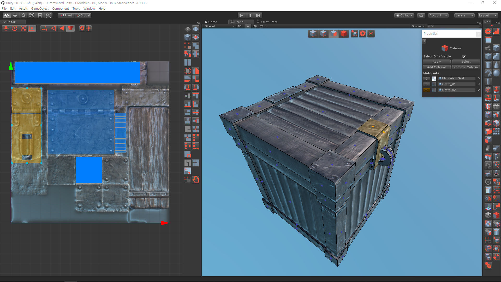

UV Editor¶
Texture mapping is the process of projecting 3D positions of a mesh to 2D space and manipulating those projected positions.UV Editor in UModeler supports many functions for the texture mapping.This tool is available from UModeler 2.0